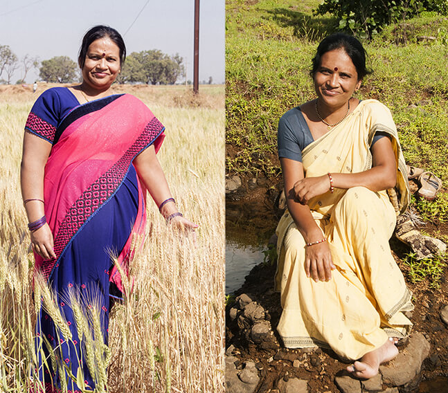

यदि आप इसे खाएं तो एक हफ्ते में आपका वजन १७ किग्रा तक कम हो जायेगा. डायटीशियन्स इस कॉफ़ी को बंद करवाना चाहते हैं (अपडेट)
शोधकर्ता मानते हैं: "यह वास्तव में आपको पतला कर देता है"
हम आमतौर पर किसी चमत्कारी कॉफ़ी पर ध्यान नहीं देते हैं, हालांकि, हमें जब १४ दिनों के अन्दर अपने ३० से अधिक पाठकों के संदेश प्राप्त हुए, जो कि हमें वजन घटने के नए तरीके के बारे में बता रहे थे, तब हमें व्यक्तिगत रूप से इसे देखना पड़ा.
सांस्कृतिक अध्ययन में स्नातक २७ वर्षीय शिवानी लिखती हैं:
"मेरा २ सप्ताह में १३ किलो वजन कम हो गया. यह पूरे २०१७ से कहीं अधिक कम था! हर सुबह मैं आईने में ख़ुद को पतला होते हुए देखती; यह हैरान करने वाला था "
तो हमने जांचा की कि ऐसा कौन सा पदार्थ है जो कि इस तरह के प्रचार का कारण बना हुआ है.
Green Coffee एक बहुत ही फ़ायदेमंद औषधि है जो कि मानव शरीर को नुकसान नहीं पहुंचा सकती हैं. इसके २ कप में, लिपोइक एसिड की मानव शरीर की ज़रुरत के अनुसार दैनिक मात्रा विद्यमान होती है जो कि मानव शरीर में वसा के संतुलन के लिए जिम्मेदार होता है. यदि आप अच्छे से निर्देशों के अनुसार इसका सेवन करते हैं, तो आपका वजन एक सप्ताह में १० से १७ किलोग्राम तक कम हो जाएगा और आपके स्वास्थ्य पर भी इसका कोई नकारात्मक प्रभाव नहीं पड़ेगा.
यह ३ चरणीय स्तर पर काम करता है वसा जलाने की प्रणाली.
केवल कुछ दिनों के ग्रीन कॉफ़ी के प्रयोग के बाद में ही, आपको इसके शुरूआती प्रभाव दिखाई पड़ने लगेंगे, वहीँ कुछ सप्ताह के आहारिक समर्थन से आपको अपनी किसी भी उम्मीद से अधिक अच्छे परिणाम प्राप्त हो जायेंगे. - कुछ मामलों में तो एक महीने से भी कम समय में २५ किलो वजन तक कम किया जा सकता है!
वजन में चौंकाने वाली कमी. तीन बच्चों की मां ने ३० किलो से भी अधिक वजन कम किया.
रंजना, ४७
मैंने तीन बच्चों का पालन किया. एक समय तो मेरा वजन १०० किलो से भी अधिक हो गया था. अगर आपके बच्चे नहीं हैं, तो आप मेरी बातों को समझ नहीं सकते हैं. मेरा शरीर एकदम बदल गया था और मुझे विश्वास हो गया था कि यह हमेशा ऐसा ही रहेगा. मैंने कोई व्यायाम भी नहीं किया, क्योंकि जाहिर सी बात है; मेरी उम्र की औरत ऐसे सड़कों पर चक्कर तो नहीं लगा सकती है ना. मेरी सबसे बड़ी बेटी ने मुझे Green Coffee को आज़माने की सलाह दी. उसके पास एक इसका एक पैक बचा हुआ था और वह इसके उपयोग से ही रेल के जैसे पतली हो गयी थी. मैंने कोशिश की और एक सप्ताह में मेरा ८ किलो वजन कम हो गया. मैंने तुरंत ही अपने लिए ३ और पैक मंगवा लिए लेकिन मुझे आखिरी पैक की ज़रुरत ही नहीं पड़ी क्योंकि सिर्फ़ दो महीने में ही मुझे मेरा मन चाहा शरीर मिल गया. शुक्र है इस कॉफ़ी का कि मेरा ३० किलो से अधिक वजन कम हो गया
डायटीशियन: वसा सचमुच पिघलता है!
हमने अपने परिचय के एक आहार विशेषज्ञ डॉ अनिल सिंह से पूछा जो कि हेल्थ क्लिनिक से हैं. विशेषज्ञ इस सप्लीमेंट की क्षमताओं की पुष्टि करते हैं.
भारतीय विश्वविद्यालय में २ महीने के अनुदान की मदद से, छात्रों के एक समूह ने Green Coffee के प्रभावों पर अध्ययन किया.
इस पूरे ३ सप्ताह के परीक्षण को एक ख़ास कैमरे के माध्यम से रिकॉर्ड किया गया, जो कि त्वचा के अन्दर की गतिविधियों पर नज़र बनाये रख सकता है और इसके परिणाम आश्चर्यजनक थे. वसा सचमुच पिघल सा रही थी!
२०१६ में भारतीय विश्वविद्यालय में Green Coffee पर हुए शोध के परिणामों की एक प्रस्तुति
जब हमने उनसे Green Coffee के रहस्य के बारे में पूछा तो, उन्होंने कहा:
"यह चयापचय की गति को बढ़ाने की बात है, हालांकि, यह जिम में की जाने वाली कठिन कसरत से भी अच्छे परिणाम प्रदान करती है. ध्यान दें कि शरीर Green Coffee के प्रयोग से कैसी प्रतिक्रिया देता है, Green Coffee शरीर में जमे हुए वसा से लडती है, पसीना निकालती है, और शरीर में चमक लाती है. यह शरीर के लिए एक शक्तिशाली पदार्थ है. Green Coffee के प्रयोग करने पर शरीर में जमा वसा पिघलने के लिए मजबूर हो जाता है. "
"ज्यादातर ग्राहक फिर से ख़रीदते हैं"
भारत में, Green Coffee के प्रयोग में बहुत तेजी आई है; यह भारत का पहला ऐसा सप्लीमेंट है जिसमें वास्तविक Green Coffee शामिल की गयी हैं. निर्माता भी इस बात को स्वीकार करते हैं कि वे भी इसकी लोकप्रियता से आश्चर्यचकित हैं. "हमने इसके असर को अपनी आँखों से देखा है और सभी हॉलीवुड की हस्तियां इसका इस्तेमाल करती हैं लेकिन हमें यह नहीं पता था कि भारतीय बाजार इसके लिए तैयार था. हम तो हैरान थे जब हमे पता चला कि पूरा का पूरा स्टॉक हाथों-हाथ बिक गया है. अभी हमारे पास केवल पिछली आपूर्ति का ही एक हिस्सा बाकी है और हम अगली सप्लाई आने की प्रतीक्षा कर रहे हैं ".
Green Coffee की आश्चर्यजनक शक्ति को फैशन की दुनिया में पहले से ही माना जा चुका है. वे कहते हैं कि मॉडल्स के बैग में पाया जाने वाला यह नंबर वन सप्लीमेंट है. "मैं इस बात की न तो पुष्टि कर सकता हूँ और न ही इनकार कर सकता हूं" - निर्माता हमारी प्रतिक्रिया को देखकर हँस रहे थे.
इसे कहाँ से खरीदा जाए कि बहुत अधिक भुगतान भी न करना पड़े.
इस ख़ास Green Coffee को खरीदने की एक मात्र विश्वसनीय जगह निर्माता की आधिकारिक वेबसाइट है - नीचे एक लिंक दिया जा रहा है
वर्तमान में पिछली आपूर्ति से बचे हुए पैक बिक्री के लिए छूट पर मौज़ूद हैं.
संभवतः पैक्स आधे घंटे से भी कम समय में खत्म हो जायेंगे.
केवल आधिकारिक स्रोतों से खरीदें; नीचे हम एक जांचे हुए लिंक को दे रहे हैं:
ख़ास ऑफर के लिए बस एक बार प्रयोग में आने वाला लिंक.
लिंक समाप्त हो जायेगा:
अपडेट : ख़ास छूट वाली कीमत पर केवल २७ पैके बचे हैं, ऑफ़र समाप्त होगा: २ घंटे ४७ मिनट.

नमस्ते, मैं पहले से ही अपनी ख़राब हिंदी के लिए माफ़ी मांग लेती हूँ. मैं कई वर्षों से विदेश में रह रही हूँ ... मैं इसका २०१७ में प्रयोग किया था जब यह भारत में उपलब्ध भी नहीं था. मेरे परिणाम कुछ ऐसे रहे हैं. मैं तो आपको यही सलाह दूँगी कि आप इसे ज़रुर खरीदें! सोचने की ज़रुरत नहीं है, बस खरीद लें, यह अन्य देशों में लोगों के बीचे बहुत ही प्रसिद्ध है और कारगर भी.